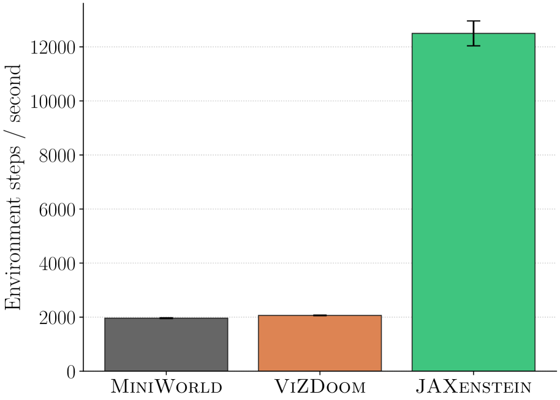
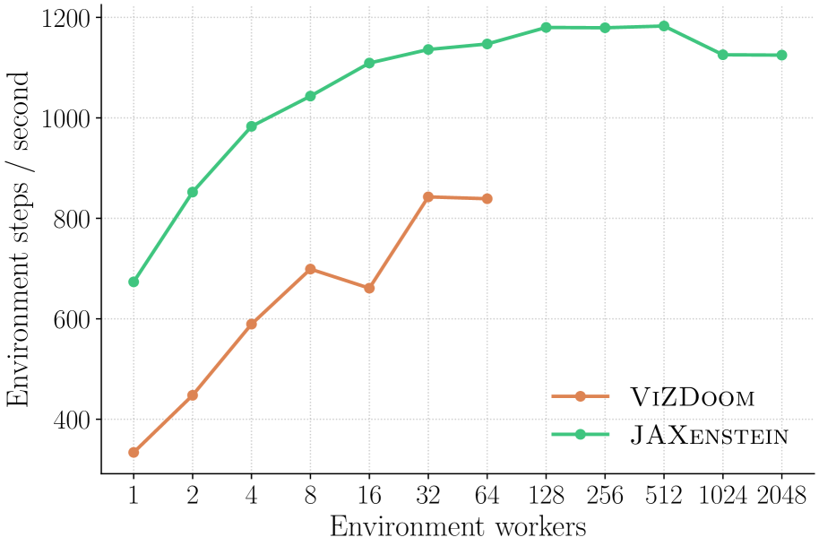
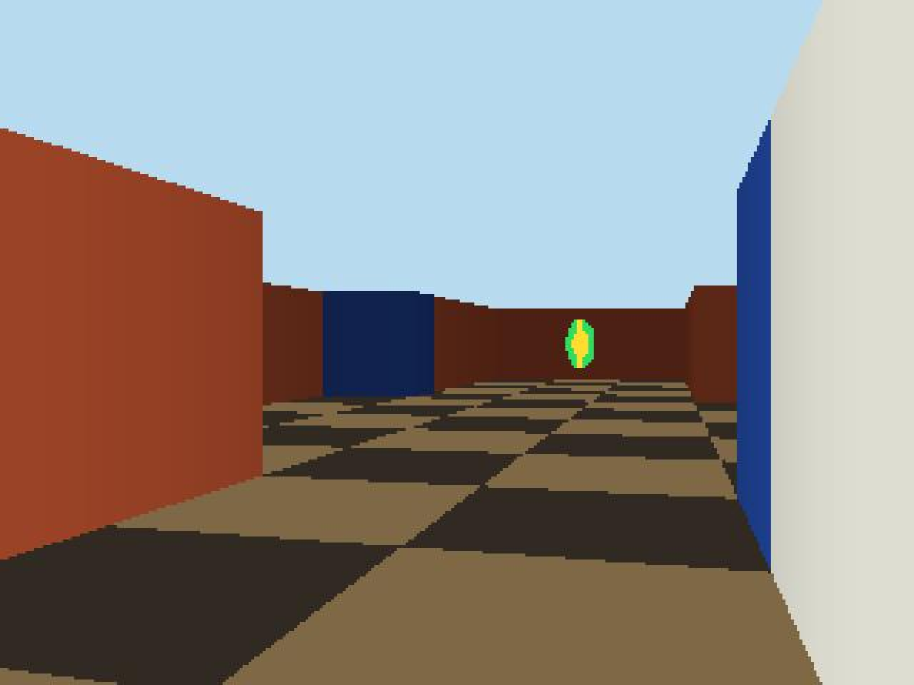

JAXenstein introduces the first JAX-native first-person benchmark, achieving several times faster simulation than existing vision-based benchmarks, enabling rapid iteration on exploration and partial observability problems.
本文介绍了JAXenstein，首个基于JAX的第一人称基准测试平台，通过纯JAX实现的Wolfenstein 3D光线投射引擎，在单CPU核心上实现比ViZDoom和MiniWorld约6倍的加速，并支持通过vmap扩展到数百个并行环境。它为JAX强化学习生态填补了视觉第一人称领域的空白，为探索和部分可观测性问题的研究提供了高效工具。
Deep Note — jaxenstein
Key Takeaways - JAXenstein is a JAX-native benchmark implementing the Wolfenstein 3D ray-casting engine for first-person RL tasks. - It achieves ~6x speedup over ViZDoom and MiniWorld on a single CPU core, and scales to hundreds of parallel environments via vmap. - The benchmark includes ports of ViZDoom, DeepMind Lab, and MiniGrid environments, all in pure JAX for end-to-end GPU acceleration. - Ray casting with DDA enables fast rendering but limits environments to tile-based maps without height changes or complex objects. - JAXenstein fills a gap in the JAX RL ecosystem by providing visual first-person domains for testing exploration and partial observability.
0) Metadata
- Title: JAXenstein: Accelerated Benchmarking for First-Person Environments
- Alias: jaxenstein
- Authors: Ruo Yu Tao, George Konidaris
- arXiv ID: 2605.19926
- Published:
- Links:
- Abs: https://arxiv.org/abs/2605.19926
- HTML: https://arxiv.org/html/2605.19926v1
- PDF: https://arxiv.org/pdf/2605.19926
- Tags: reinforcement-learning, jax, first-person-benchmark, ray-casting, wolfenstein-3d
- Domains: ai_safety, system_safety
- Rating: 3/5 (base 1 + quality 1 + observation 1)
1) Why-read
JAXenstein introduces the first JAX-native first-person benchmark, achieving several times faster simulation than existing vision-based benchmarks, enabling rapid iteration on exploration and partial observability problems.
2) CRGP
C — Context
Reinforcement learning progress has been driven by challenging benchmarks like ALE and MuJoCo, but modern JAX-based RL frameworks lack visual first-person domains critical for testing exploration and partial observability. Existing first-person benchmarks like ViZDoom and DeepMind Lab are not implemented in JAX, creating a bottleneck for fast, scalable experimentation.
R — Related work
- ViZDoom (Wydmuch et al., 2019) — first-person RL benchmark based on Doom engine, not JAX-native.
- DeepMind Lab (Beattie et al., 2016) — first-person 3D navigation tasks, not JAX-native.
- MiniWorld/MiniGrid (Chevalier-Boisvert et al., 2023) — lightweight 3D and grid-world benchmarks, not JAX-native.
- Brax (Freeman et al., 2021) — JAX-based physics benchmark for continuous control, not first-person vision.
- PureJaxRL (Lu et al., 2022) — end-to-end JAX RL training pipeline, but lacked first-person environments.
G — Gap
The JAX RL ecosystem lacks benchmarks for visual first-person tasks, which are essential for evaluating exploration and partial observability. Existing first-person benchmarks are not implemented in JAX, preventing researchers from leveraging JIT compilation and vmap for fast, scalable experimentation.
P — Proposal
JAXenstein implements a lightweight Wolfenstein 3D ray-casting engine entirely in JAX, supporting JIT and vmap for massive parallelization. It ports existing first-person environments (ViZDoom, DeepMind Lab, MiniGrid) and new ASCII-maze-based tasks, achieving ~6x speedup over ViZDoom on CPU and enabling GPU-accelerated end-to-end training.
---
4) Experiments
Main results
JAXenstein achieves ~6x steps-per-second over ViZDoom and MiniWorld on a single CPU core. In training with recurrent PPO over 1M steps, JAXenstein with pure JAX pipeline achieves much higher environment steps per second than ViZDoom with Stable Baselines3, and ViZDoom crashes when parallelizing >64 environments while JAXenstein scales further.
Ablation
Rendering at native low resolution (without rescaling) provides massive per-timestep speedups, as images are typically downsampled for deep RL; this design choice is a key factor in JAXenstein's speed advantage.
Limitations
['Ray casting with DDA requires tile-based maps, preventing rendering of stairs, jumping, height differences, or complex 3D objects.', 'Environments with shooting and enemy interaction are not yet implemented (planned for later release).', 'Simplified visual assets (no textures, sprites only) may limit transferability to photorealistic domains.']
5) Why it matters
- Provides a fast, scalable testbed for first-person RL in JAX, directly enabling faster iteration on exploration and partial observability algorithms.
- Demonstrates how classic game engine techniques (ray casting) can be repurposed for modern ML infrastructure (JAX) to achieve order-of-magnitude speedups.
- Fills a critical gap in the JAX RL ecosystem, which previously lacked vision-based first-person domains despite their importance for challenging RL problems.
6) Next steps
- [ ] Evaluate JAXenstein on exploration algorithms (e.g., RND, ICM, Go-Explore) to benchmark sample efficiency in first-person tasks.
- [ ] Extend JAXenstein with more complex rendering (e.g., textured walls, enemies) while maintaining JAX compatibility.
- [ ] Integrate JAXenstein with existing JAX RL libraries (e.g., PureJaxRL, Brax) for turnkey experimentation.
- [ ] Compare JAXenstein training speed and sample efficiency against non-JAX first-person benchmarks on standard RL algorithms.
7) Scoring
3/5 = base 1 + quality 1 + observation 1
JAXenstein：面向第一人称环境的加速基准测试
主要结论 - JAXenstein是首个JAX原生基准测试，实现了Wolfenstein 3D光线投射引擎，用于第一人称强化学习任务。 - 在单CPU核心上，它比ViZDoom和MiniWorld快约6倍，并通过vmap支持数百个并行环境。 - 该基准测试包含了ViZDoom、DeepMind Lab和MiniGrid环境的移植版本，全部基于纯JAX实现，支持端到端GPU加速。 - 基于DDA的光线投射渲染速度快，但限制了环境只能使用基于瓦片的地图，无法处理高度变化或复杂物体。 - JAXenstein填补了JAX强化学习生态中缺乏视觉第一人称领域的空白，为测试探索和部分可观测性提供了重要工具。
1) 阅读理由
JAXenstein提出了首个JAX原生第一人称基准测试，比现有视觉基准测试快数倍，能够加速探索和部分可观测性问题的迭代研究。
2) CRGP（背景 / 相关工作 / 差距 / 方案）
背景：强化学习的发展得益于ALE和MuJoCo等挑战性基准测试，但现代基于JAX的强化学习框架缺乏视觉第一人称领域，而这对于测试探索和部分可观测性至关重要。现有的第一人称基准测试如ViZDoom和DeepMind Lab并非JAX原生，成为快速、可扩展实验的瓶颈。
相关工作：ViZDoom基于Doom引擎，非JAX原生；DeepMind Lab提供第一人称3D导航任务，非JAX原生；MiniWorld/MiniGrid是轻量级3D和网格世界基准测试，非JAX原生；Brax是JAX物理基准测试，用于连续控制，但非第一人称视觉；PureJaxRL提供了端到端JAX强化学习训练流程，但缺乏第一人称环境。
差距：JAX强化学习生态缺乏视觉第一人称任务的基准测试，而这些任务对于评估探索和部分可观测性至关重要。现有的第一人称基准测试未在JAX中实现，阻碍了研究者利用JIT编译和vmap进行快速、可扩展的实验。
提案：JAXenstein在JAX中实现了一个轻量级的Wolfenstein 3D光线投射引擎，支持JIT和vmap实现大规模并行化。它移植了现有的第一人称环境（ViZDoom、DeepMind Lab、MiniGrid）并新增了基于ASCII迷宫的任务，在CPU上比ViZDoom快约6倍，并支持GPU加速的端到端训练。
3) 实验
主要结果：JAXenstein在单CPU核心上每秒步数比ViZDoom和MiniWorld快约6倍。在使用循环PPO进行100万步训练时，纯JAX管线的JAXenstein比使用Stable Baselines3的ViZDoom实现了更高的环境每秒步数，且ViZDoom在并行超过64个环境时会崩溃，而JAXenstein可以进一步扩展。
消融实验
消融实验发现：以原生低分辨率渲染（不进行缩放）可以带来巨大的每时间步加速，因为图像通常会被降采样用于深度强化学习；这一设计选择是JAXenstein速度优势的关键因素。
局限性
['基于DDA的光线投射需要基于瓦片的地图，无法渲染楼梯、跳跃、高度差异或复杂的3D物体。', '涉及射击和敌人交互的环境尚未实现（计划在后续版本中发布）。', '简化的视觉资产（无纹理，仅有精灵）可能限制向逼真领域的迁移能力。']
4) 重要性
- 为JAX中的第一人称强化学习提供了一个快速、可扩展的测试平台，直接加速了探索和部分可观测性算法的迭代。
- 展示了如何将经典游戏引擎技术（光线投射）重新用于现代机器学习基础设施（JAX），实现数量级的加速。
- 填补了JAX强化学习生态的关键空白，该生态此前缺乏基于视觉的第一人称领域，尽管这些领域对解决具有挑战性的强化学习问题至关重要。
5) 下一步
- [ ] 在JAXenstein上评估探索算法（如RND、ICM、Go-Explore），以基准测试第一人称任务中的样本效率。
- [ ] 扩展JAXenstein以支持更复杂的渲染（如纹理墙壁、敌人），同时保持JAX兼容性。
- [ ] 将JAXenstein与现有的JAX强化学习库（如PureJaxRL、Brax）集成，实现一键式实验。
- [ ] 在标准强化学习算法上，比较JAXenstein的训练速度和样本效率与非JAX第一人称基准测试的差异。



64 environments." loading="lazy">